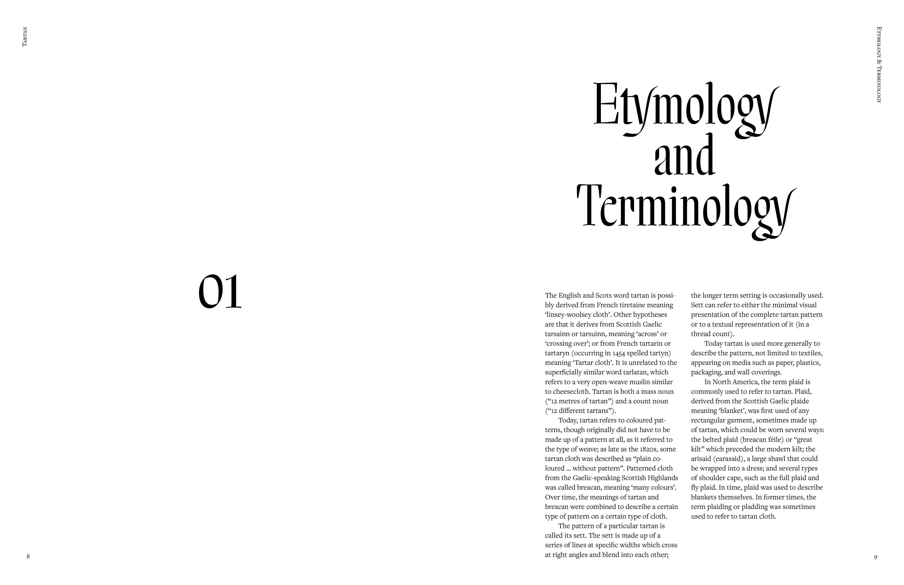
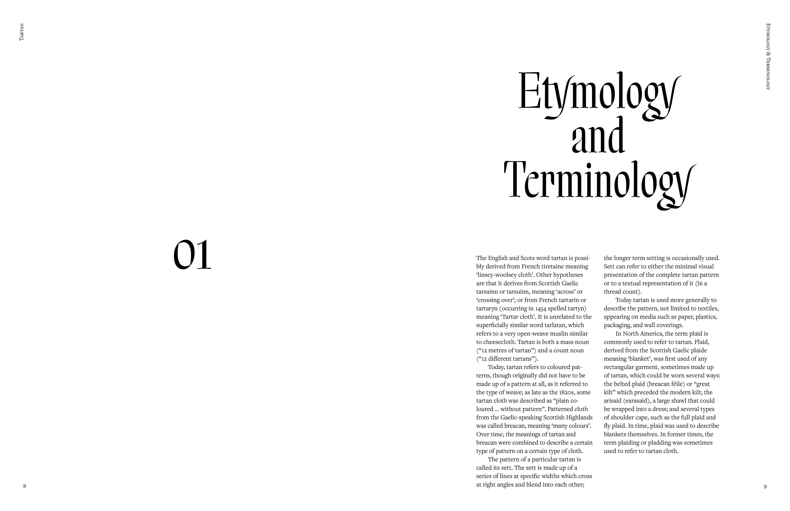
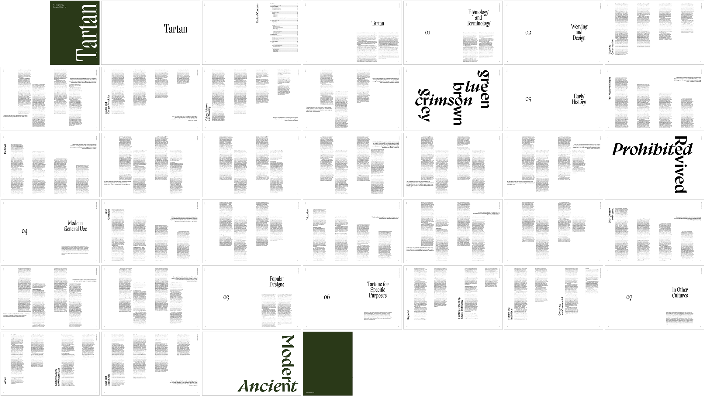
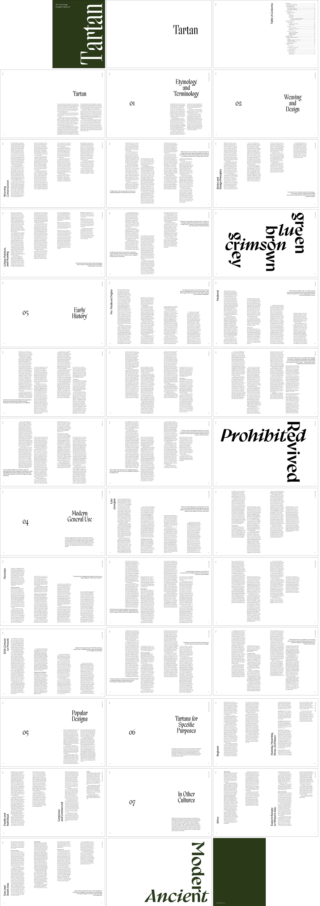

Type: Typography
Project: Wikibook
Date: December 2023
A 72 page book created using only text from the Wikipedia article on Tartan which is the 23rd longest in existence. The book uses a six column grid, fonts that reflect the technique and history of tartan, and layouts that reference weaving including three graphic spreads.
I chose to use Salter by Sharp Type, Gyst Variable by Phospho, and Frieght Text and Sans by Joshua Darden to reflect the Gaelic origins of the textile.


Project: Wikibook
Date: December 2023
A 72 page book created using only text from the Wikipedia article on Tartan which is the 23rd longest in existence. The book uses a six column grid, fonts that reflect the technique and history of tartan, and layouts that reference weaving including three graphic spreads.
I chose to use Salter by Sharp Type, Gyst Variable by Phospho, and Frieght Text and Sans by Joshua Darden to reflect the Gaelic origins of the textile.